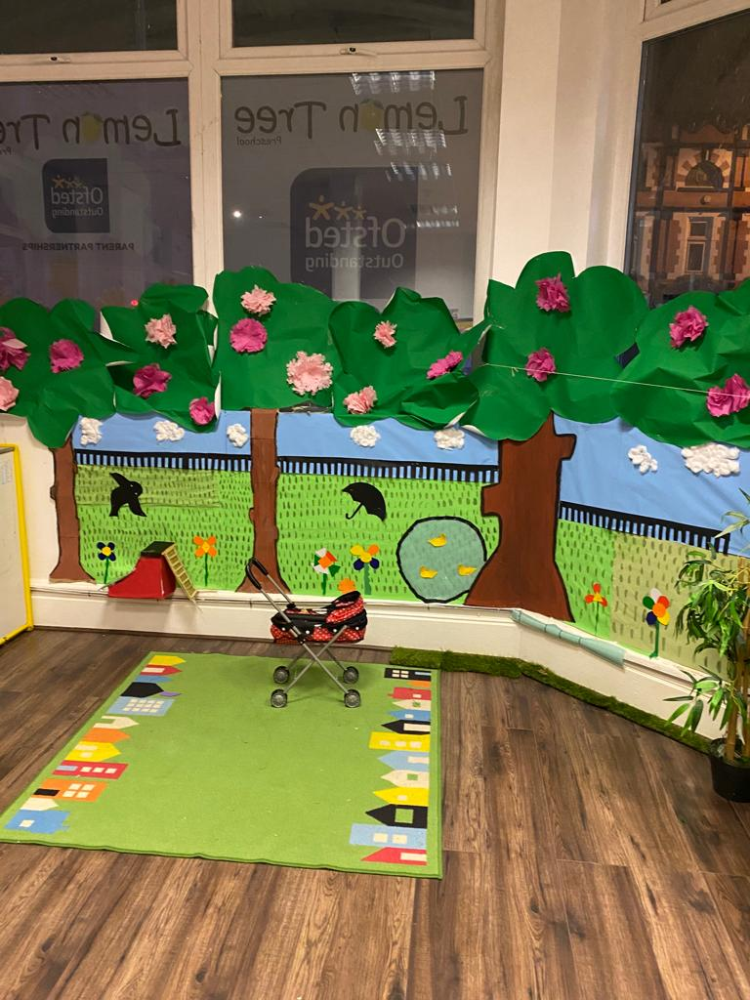

It is completely natural for parents to feel concerned when their child is not talking yet, especially when comparing their child’s milestones to those of other children. Questions like “Why is my child not talking yet?” or “When should my toddler start talking?” are very common in early years parenting.
Speech development is not the same for every child. Some children speak early, while others take more time to build confidence. At Lemon Tree Preschool, supporting children’s early communication milestones is an important part of helping families feel informed and reassured. You can learn more about our approach through our Early Learning Philosophy and how we structure learning in the early years.
According to the NHS, communication develops gradually through play, interaction, and everyday experiences, and variation in timing is normal during early childhood.
Understanding Normal Speech Development in Young Children
Children begin developing communication skills long before their first clear words. These early stages include listening, reacting to voices, babbling, and using gestures.
The Early Years Foundation Stage (EYFS), followed in UK settings, highlights Communication and Language as a key area of development. This is explained in our Curriculum Overview, where we focus on building language through play-based learning.
Typical speech milestones by age
- 6–12 months: babbling and sound recognition
- Around 12 months: first simple words
- 18 months: growing vocabulary
- Around 2 years: combining two words
- 3 years: forming short sentences
These milestones are general guides, not strict rules. Every child develops at a different pace.
Why do some children talk earlier than others?
Some children are naturally more vocal, while others prefer observing before speaking. Factors like environment, exposure to language, and personality all influence development.
You can read more about how we support children’s learning environment in our About Us page, which explains our values and approach to early education.
Signs Your Child May Be Experiencing a Speech Delay
Parents often ask what the signs of speech delay are or if a toddler is not speaking clearly. While each child is different, some common signs include:
Delayed babbling or limited sounds
A child may not experiment with sounds or vocal play as expected in the early stages.
Not using words by expected ages
Limited vocabulary or no clear words by around 18–24 months may need attention.
Difficulty understanding simple instructions
Struggling to respond to basic requests like “come here” or “give me the ball.”
These signs do not confirm a problem but may suggest delayed speech in toddlers that needs monitoring.
Common Reasons Why a Child Is Not Talking Yet
There are several possible explanations for language delay in young children, and most are not serious.
Natural variation in development
Some children are simply late talkers and catch up over time.
Hearing issues
Even mild hearing difficulties can affect how children learn and repeat words.
Environmental and social factors
Children need regular interaction to develop speech. Lack of communication opportunities may slow progress.
Developmental conditions that may affect speech
Some children may need additional support, but assessment is required before any conclusion.
When to Worry About Speech Delay
Parents often wonder when to worry about delayed speech in toddlers, or whether they should worry if their child is not talking.
Concerns may arise if:
- No babbling by 12 months
- Very few words by 18–24 months
- Difficulty understanding simple language
- No progress over time
Early support is important. NHS guidance recommends speaking to a health visitor or GP if concerns continue.
What Parents Can Do to Support Speech Development at Home
Simple daily actions can support speech development in children:
- Talk during routines like dressing and eating
- Read books every day
- Sing songs and nursery rhymes
- Give time for responses
These small activities strengthen language development milestones naturally without pressure.
How Early Years Settings Can Help Children Build Communication Skills
Early years environments play a key role in speech development. At Lemon Tree Preschool, children learn through play, social interaction, and structured communication activities.
You can explore how this is embedded in daily learning through our Curriculum page.
We focus on:
- Language-rich play-based learning
- Group interaction and storytelling
- Encouraging confidence in speaking
- Observing communication milestones for toddlers
Our Health & Safety standards also ensure children learn in a safe and supportive environment.
Staff work closely with parents through regular communication, helping identify any early signs of speech delay in the early years.
When to Speak to a Health Visitor or Speech Therapist
If concerns continue, parents may be advised to speak to a health visitor or speech therapist.
Professionals may look at:
- Vocabulary level
- Understanding of instructions
- Social communication
- Hearing ability
You can also learn more about safeguarding and support in our About Us section, which explains how we work with families.
Final Thoughts
Every child develops communication skills in their own time. While it is natural to worry when your child is not talking yet, many delays are temporary and improve with time and support.
The most important thing is to stay observant, encourage daily communication, and seek guidance if concerns continue. With a calm, informed approach, children usually make steady progress at their own pace.
FAQs About Speech Delay in Young Children
Is it normal for a 2-year-old not to talk yet?
Some children begin speaking later than others, so a delay does not always mean there is a serious issue.
Does being bilingual cause speech delay?
No, growing up with two languages does not cause speech delay in children. Bilingual children may take a slightly different path in language development, but they usually reach speech milestones healthily and naturally.
Can preschool help with speech development?
Yes, preschool can play an important role in building a child’s communication skills through play, interaction, and daily routines.
At what age should I worry about my child’s speech?
You may need to seek advice if your child is missing expected speech milestones, such as not saying words by around 18 months or not combining words by age two.
Can late talkers catch up on their own?
Many late talkers do catch up naturally, especially when they have regular opportunities to interact and communicate.